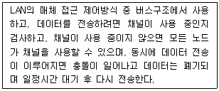
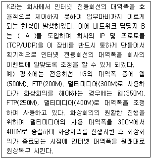
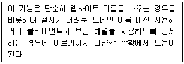
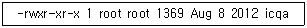

네트워크관리사-2급 (2019-08-25 기출문제)
1과목: TCP/IP
1. IP Header의 내용 중 TTL(Time To Live)의 기능을 설명한 것으로 옳지 않은 것은?
- IP 패킷은 네트워크상에서 영원히 존재할 수 있다.
- 일반적으로 라우터의 한 홉(Hop)을 통과할 때마다 TTL 값이 '1' 씩 감소한다.
- Ping과 Tracert 유틸리티는 특정 호스트 컴퓨터에 접근을 시도하거나 그 호스트까지의 경로를 추적할 때 TTL 값을 사용한다.
- IP 패킷이 네트워크상에서 얼마동안 존재 할 수 있는가를 나타낸다.
(정답률: 88%)

2. TCP와 UDP의 차이점을 설명한 것 중 옳지 않은 것은?
- TCP는 전달된 패킷에 대한 수신측의 인증이 필요하지만 UDP는 필요하지 않다.
- TCP는 대용량의 데이터나 중요한 데이터 전송에 이용이 되지만 UDP는 단순한 메시지 전달에 주로 사용된다.
- UDP는 네트워크가 혼잡하거나 라우팅이 복잡할 경우에는 패킷이 유실될 우려가 있다.
- UDP는 데이터 전송전에 반드시 송수신 간의 세션이 먼저 수립되어야 한다.
(정답률: 85%)
3. IPv4 Class 중에서 멀티캐스트 용도로 사용되는 것은?
- B Class
- C Class
- D Class
- E Class
(정답률: 89%)
4. TCP/IP Protocol 군에서 네트워크 계층의 프로토콜로만 연결된 것은?
- TCP - UDP - IP
- ICMP - IP - IGMP
- FTP - SMTP - Telnet
- ARP - RARP – TCP
(정답률: 84%)
5. C Class의 네트워크를 서브넷으로 나누어 각 서브넷에 4~5 대의 PC를 접속해야 할 때, 서브넷 마스크 값으로 올바른 것은?
- 255.255.255.240
- 255.255.0.192
- 255.255.255.248
- 255.255.255.0
(정답률: 82%)
6. IPv6 헤더 형식에서 네트워크 내에서 혼잡 상황이 발생되어 데이터그램을 버려야 하는 경우 참조되는 필드는?
- Version
- Priority
- Next Header
- Hop Limit
(정답률: 80%)
7. UDP 헤더에 포함이 되지 않는 항목은?
- 확인 응답 번호(Acknowledgment Number)
- 소스 포트(Source Port) 주소
- 체크섬(Checksum) 필드
- 목적지 포트(Destination Port) 주소
(정답률: 87%)
8. ARP와 RARP에 대한 설명으로 옳지 않은 것은?
- RARP는 브로드캐스팅을 통해 해당 네트워크 주소에 대응하는 하드웨어의 물리적 주소를 얻는다.
- RARP는 로컬 디스크가 없는 네트워크 상에 연결된 시스템에도 사용된다.
- ARP를 이용하여 중복된 IP Address 할당을 찾아낸다.
- ARP와 RARP는 IP Address와 Ethernet 주소를 Mapping하는데 관여한다.
(정답률: 64%)
9. 인터넷 그룹 관리 프로토콜로 컴퓨터가 멀티캐스트 그룹을 인근의 라우터들에게 알리는 수단을 제공하는 인터넷 프로토콜은?
- ICMP
- IGMP
- EGP
- IGP
(정답률: 90%)
10. 인터넷의 잘 알려진 포트(Well-Known Port)로 옳지 않은 것은?
- Telnet – 23
- SMTP - 25
- POP3 – 110
- SSH – 69
(정답률: 89%)
11. TFTP 프로토콜에 대한 설명 중 옳지 않은 것은?
- Trivial File Transfer Protocol의 약어이다.
- 네트워크를 통한 파일 전송 서비스이다.
- 3방향 핸드셰이킹 방법인 TCP 세션을 통해 전송한다.
- 신속한 파일의 전송을 원할 경우에는 FTP보다 훨씬 큰 효과를 얻을 수 있다.
(정답률: 88%)
12. NMS(Network Management Solution)을 운영하기 위해서 반드시 필요하며, 각종 네트워크 장비의 Data를 수집하고 대규모의 네트워크를 관리하기 위해 필요한 프로토콜은?
- Ping
- ICMP
- SNMP
- SMTP
(정답률: 85%)
13. IPv6의 주소 표기법으로 올바른 것은?
- 192.168.1.30
- 3ffe:1900:4545:0003:0200:f8ff:ffff:11⑤
- 00:A0:C3:4B:21:33
- 0000:002A:0080:c703:3c75
(정답률: 90%)
14. 사설 IP주소를 공인 IP주소로 바꿔주는데 사용하는 통신망의 주소 변환 기술로, 공인 IP주소를 절약하고, 내부 사설망을 이용하여 인터넷에 연결하므로 보안을 강화할 수 있는 것은?
- DHCP
- ARP
- BOOTP
- NAT
(정답률: 87%)
15. 다음 TCP 패킷의 플래그 중에서 연결이 정상적으로 끝남을 의미하는 것은?
- FIN
- URG
- ACK
- RST
(정답률: 78%)
16. ICMP 메시지의 타입번호와 설명으로 옳지 않은 것은?
- 타입 0 : Echo Request, 에코 요청
- 타입 3 : Destination Unreachable, 목적지 도달 불가
- 타입 5 : Redirect, 경로 재지정
- 타입 11 : Time Exceeded, 시간 초과
(정답률: 73%)
17. 다음의 응용계층 프로토콜 중에 전송계층의 프로토콜 TCP, UDP를 모두 사용하는 프로토콜은 무엇인가?
- FTP
- SMTP
- DNS
- SNMP
(정답률: 71%)
2과목: 네트워크 일반
18. 데이터 흐름 제어(Flow Control)와 관련 없는 것은?
- Stop and Wait
- XON/XOFF
- Loop/Echo
- Sliding Window
(정답률: 78%)
19. OSI 7 Layer 중 응용계층(Application Layer)에서 통신을 수행하는 다양한 정보의 표현 형식을 공통의 전송형식으로 변환하고, 암호화 및 압축 등의 기능을 수행하는 계층은?
- 세션 계층
- 네트워크 계층
- 전송 계층
- 프리젠테이션 계층
(정답률: 81%)
20. IEEE 표준안 중 CSMA/CA에 해당하는 표준은?
- 802.1
- 802.2
- 802.3
- 802.11
(정답률: 82%)
21. 다음에서 설명하는 전송 방식은?

- Token Ring
- Token Bus
- CSMA/CD
- Slotted Ring
(정답률: 84%)
22. (A) 안에 맞는 용어로 옳은 것은?

- QoS (Quality of Service)
- F/W (Fire Wall)
- IPS (intrusion prevention system)
- IDS ( Intrusion Detection System)
(정답률: 88%)
23. 한번 설정된 경로는 전용 경로로써 데이터가 전송되는 동안 유지 해야 하는 전송 방식은?
- Circuit Switching
- Packet Switching
- Message Switching
- PCB Switching
(정답률: 67%)
24. 인터넷 상의 서버에 소프트웨어, 저장공간 등의 IT 자원을 두고 인터넷 기술을 활용해 이를 웹기반 서비스로 개인용 단말에게 제공하는 기술을 일컫는 용어는?
- 클라우드 컴퓨팅
- 그리드 컴퓨팅
- 분산 컴퓨팅
- 유비쿼터스 컴퓨팅
(정답률: 89%)
25. OSI 7 Layer 중 데이터 링크 계층의 기능으로 옳지 않은 것은?
- 통신 프로토콜을 정의한 OSI 7 Layer 중 세 번째 계층에 해당한다.
- 비트를 프레임화 시킨다.
- 전송, 형식 및 운용에서의 에러를 검색한다.
- 흐름제어를 통하여 데이터 링크 개체간의 트래픽을 제어한다.
(정답률: 81%)
26. 전송효율을 최대로 하기 위해 프레임의 길이를 동적으로 변경시킬 수 있는 ARQ(Automatic Repeat Request)방식은?
- Adaptive ARQ
- Go back-N ARQ
- Selective-Repeat ARQ
- Stop and Wait ARQ
(정답률: 78%)
27. 전기신호는 구리선을 통하여 전송되며, 이는 먼 거리를 이동하면서 크기가 약해진다. 이러한 현상을 뜻하는 것은?
- 감쇠(Attenuation)
- 임피던스(Impedance)
- 간섭(Interference)
- 진폭(Amplitude)
(정답률: 94%)
3과목: NOS
28. Windows Server 2008 R2에서 ′netstat′ 명령이 제공하는 정보로 옳지 않은 것은?
- 인터페이스의 구성 정보
- 라우팅 테이블
- IP 패킷이 목적지에 도착하기 위해 방문하는 게이트웨이의 순서 정보
- 네트워크 인터페이스의 상태 정보
(정답률: 78%)
29. Windows Server 2008 R2에서 파일 및 프린터 서버를 사용할 수 있도록 지원하기 위해서 반드시 설치해야 하는 통신 프로토콜은?
- TCP/IP
- SNMP
- SMTP
- IGMP
(정답률: 77%)
30. Windows Server 2008 R2에서 DNS서버기능을 설정한 후에 설정이 제대로 되었는지 확인하기 위하여, 명령어 프롬프트에서 도메인을 입력하면 해당 IP주소를 보여주는 명령어는?
- ls
- nslookup
- show
- pwd
(정답률: 86%)
31. Windows Server 2008 R2에서 FTP 사이트 구성시 SSL을 적용함으로써 얻어지는 것은?
- 전송속도 증대
- 사용자 편의 향상
- 동시 접속 사용자 수 증가
- 보안 강화
(정답률: 85%)
32. Windows Server 2008 R2의 Active Directory 서비스 중에서 디렉터리 데이터를 저장하고, 사용자 로그온 프로세스, 인증 및 디렉터리 검색을 포함하여 사용자와 도메인 간의 통신을 관리하는 서비스는?
- AD 인증서 서비스
- AD 도메인 서비스
- AD Federation 서비스
- AD Rights Management 서비스
(정답률: 74%)
33. Windows Server 2008 R2의 Hyper-V의 스냅숏(Snapshot)에 관한 설명으로 옳지 않은 것은?
- 스냅숏은 가상컴퓨터의 특정 시점이다.
- 스냅숏의 내용은 가상디스크, 메모리, 프로세스, 구성을 모두 포함한다.
- 스냅숏은 가상 컴퓨터를 복사하는 기술이다.
- 하나의 가상컴퓨터에 여러 개의 스냅숏을 만들 수 있다.
(정답률: 71%)
34. Linux 시스템에서 사용자가 내린 명령어를 Kernel에 전달해주는 역할을 하는 것은?
- System Program
- Loader
- Shell
- Directory
(정답률: 90%)
35. Linux 디렉터리 구성에 대한 설명으로 옳지 않은 것은?
- /tmp - 임시파일이 저장되는 디렉터리
- /boot - 시스템이 부팅 될 때 부팅 가능한 커널 이미지 파일을 담고 있는 디렉터리
- /var - 시스템의 로그 파일과 메일이 저장되는 위치
- /usr - 사용자 계정이 위치하는 파티션 위치
(정답률: 76%)
36. 아파치 ′httpd.conf′ 설정파일의 항목 중 접근 가능한 클라이언트의 개수를 지정하는 항목으로 올바른 것은?
- ServerName
- MaxClients
- KeepAlive
- DocumentRoot
(정답률: 89%)
37. Linux에서 프로세스와 관련된 명령어에 대한 설명 중 옳지 않은 것은?
- kill - 프로세스를 종료시키는 명령어
- nice - 프로세스의 우선순위를 변경하는 명령어
- pstree - 프로세스를 트리형태로 보여주는 명령어
- top - 가장 우선순위가 높은 프로세스를 보여주는 명령어
(정답률: 82%)
38. Windows Server 2008 R2의 이벤트 뷰어에 대한 설명으로 옳지 않은 것은?
- ′이 이벤트에 작업 연결′은 이벤트 발생 시 특정 작업이 일어나도록 설정하는 것이다.
- ′현재 로그 필터링′을 통해 특정 이벤트 로그만을 골라 볼 수 있다.
- 사용자 지정 보기를 XML로도 작성할 수 있다.
- ′구독′을 통해 관리자는 로컬 시스템의 이벤트에 대한 주기적인 이메일 보고서를 받을 수 있다.
(정답률: 72%)
39. Windows Server 2008 R2에서 제공하는 기능으로 허가되지 않은 접근을 보호하고, 폴더나 파일을 암호화하는 기능은?
- Distributed File System
- EFS(Encrypting File System)
- 디스크 할당량
- RAID
(정답률: 84%)
40. Windows Server 2008 R2 웹 서버(IIS)에 대해 역할 서비스들 중 다음 보기에서 해당되는 것은?

- 정적 콘텐츠
- 디렉터리 검색
- HTTP 리디렉션
- WebDAV 게시
(정답률: 73%)
41. Linux 명령어 중에 init(초기화 프로세스)를 이용하여 재부팅할 경우 하는 옵션은 무엇인가?
- init 0
- init 1
- init 5
- init 6
(정답률: 73%)
42. Windows Server 2008 R2의 DNS 서버에서 정방향 조회 영역 설정에서 SOA 레코드의 각 필드에 대한 설명으로 옳지 않은 것은?
- 일련번호 : 해당 영역 파일의 개정 번호다.
- 주 서버 : 해당 영역이 초기에 설정되는 서버다.
- 책임자 : 해당 영역을 관리하는 사람의 전자 메일 주소다. webmaster@icqa.or.kr 형식으로 기입한다.
- 새로 고침 간격 : 보조 서버에게 주 서버의 변경을 검사하기 전에 대기하는 시간이다.
(정답률: 79%)
43. Linux 시스템의 ′ls -l′ 명령어에 의한 출력 결과이다. 옳지 않은 것은?

- 소유자 UID는 ′root′ 이다.
- 소유자 GID는 ′root′ 이다.
- 소유자는 모든 권한을 가지며, 그룹 사용자와 기타 사용자는 읽기, 실행 권한만 가능하도록 설정되었다.
- ′icqa′는 디렉터리를 의미하며 하위 디렉터리의 개수는 한 개 이다.
(정답률: 78%)
44. Linux에 존재하는 데몬에 대한 설명 중 올바른 것은?
- crond : 호스트 네임을 IP 주소로 변환하는 DNS 데몬
- httpd : 리눅스에 원격 접속된 사용자에 대한 정보를 알려주는 데몬
- kerneld : 필요한 커널 모듈을 동적으로 적재해주는 데몬
- named : inetd 프로토콜을 지원하는 데몬
(정답률: 76%)
45. Linux 명령어 중 현재 디렉터리에서 바로 상위 디렉터리로 이동하는 명령어는?
- cd..
- cd ..
- cd .
- cd ~
(정답률: 82%)
4과목: 네트워크 운용기기
46. Hub가 사용하는 OSI 계층은?
- 물리 계층
- 세션 계층
- 트랜스포트 계층
- 애플리케이션 계층
(정답률: 86%)
47. 리피터(Repeater)를 사용해야 될 경우로 올바른 것은?
- 네트워크 트래픽이 많을 때
- 세그먼트에서 사용되는 액세스 방법들이 다를 때
- 데이터 필터링이 필요할 때
- 신호를 재생하여 전달되는 거리를 증가시킬 필요가 있을 때
(정답률: 89%)
48. 스위치에서 발생하는 루핑(Looping)에 대한 설명으로 옳지 않은 것은?
- 동일한 목적지에 대해 두 개 이상의 경로가 있을 때 발생한다.
- 브로드 캐스트 패킷에 의해 발생한다.
- 필터링 기능 때문에 발생한다.
- 스패닝 트리 프로토콜을 이용해서 루핑을 방지해줄 수 있다.
(정답률: 63%)
49. 100Mbps 이상의 고속 데이터 전송이 가능하고, 트위스트 페어의 간편성과 동축 케이블이 가진 넓은 대역폭의 특징을 모두 갖고 있으며 중심부는 코어와 클래드로 구성되어 있는 전송회선은?
- BNC 케이블
- 광섬유 케이블
- 전화선
- 100Base-T
(정답률: 87%)
50. 다음 중 NIC(Network Interface Card)의 물리적 주소인 MAC의 구성이 아닌 것은?
- 16진수 12자리로 구성되어 있다.
- 전반부 16진수 6자리는 OUI(Organizational Unique Identifier)이다.
- 물리적 주소의 크기는 128비트이다.
- 후반부 16진수 6자리는 HOST Identifier이다.
(정답률: 79%)
TTL(Time To Live)은 IP 패킷이 네트워크 상에서 얼마나 오래 존재할 수 있는지를 나타내는 값이다. 일반적으로 라우터의 한 홉(Hop)을 통과할 때마다 TTL 값이 '1' 씩 감소하며, TTL 값이 0이 되면 해당 패킷은 폐기된다. Ping과 Tracert 유틸리티는 특정 호스트 컴퓨터에 접근을 시도하거나 그 호스트까지의 경로를 추적할 때 TTL 값을 사용한다. 따라서 IP 패킷은 네트워크상에서 영원히 존재할 수 없다.